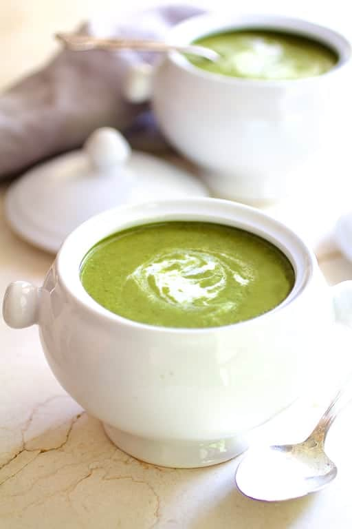

Green Veggie Soup

Ingredients
- 3 Zucchini
- 3 Carrots
- 2 Celery Stalks
- 1 Carton of Bone broth
- 1 Potato
- Salt
- Pepper
- Onion Powder
- Garlic Powder
- Chicken Boullion
- Italian Seasoning
Steps
- Chop up veggies.
- Sautee with oil until fragrant, add italian seasoning, chicken boullion and other seasonings to taste.
- Add Bone Broth and water until veggies are fully submerged.
- Leave on medium heat until veggies are soft.
- Use blender or Immersion blender creating a smooth soup.
- Adjust flavor to taste.
- Serve and top with parmesean cheese and side of toast.